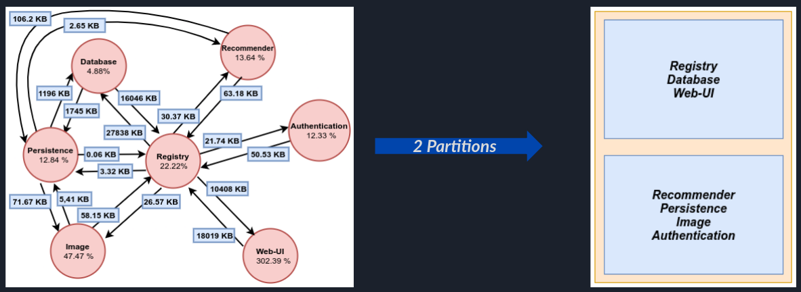

Strategic Container Scheduling
Topology and Resource Aware Container Placement
Research Outcomes
-
Local Container Scheduler (TRACPAD) that uses historical runtime data to determine a container-to-core mapping that benefits performance.
-
An understanding of how TRACPAD helps improve application performance.
-
An evaluation of TRACPAD and the factors that may affect the policies generated.
-
A technique to strategically coalesce containers to minimize the communication overhead induced by the decoupled nature of microservices.
Motivation
Recent development in server hardware to deliver performance scalability has seen the introduction of high core-count server CPUs that are based on multi-chip module designs with multiple non-uniform memory access (NUMA) domains per socket. As a result, these CPUs behave like a mini-distributed system. On such systems, the performance impact of NUMA is more pronounced and a lack of knowledge of the underlying topology leads to a loss in performance. In this scenario, strategically scheduling containers can be beneficial for the performance of the microservice application.
It’s all about Graphs
TRACPAD models the scheduling problem as a weighted graph where -
- Node weights represent individual container resource utilization metrics
- Edge weights represent communication payload size
TRACPAD partitions this Container Communication Model to generate the placement scheme. To partition the graph, the ParMETIS library was used which performs the partitioning in parallel.
The TRACPAD algorithm partitions the weighted graph as follows -
- Minimize the EdgeCut (Sum of the Cut Edges in the graph partition). This is equivalent to minimizing inter-CCX communication.
- Balance the node weights in every partition. This is equivalent to minimizing resource contentions.
Reduce communication overheads and Increase the efficiency with which resources are utilized

If you’re interested and would like to know more, please view the talk.